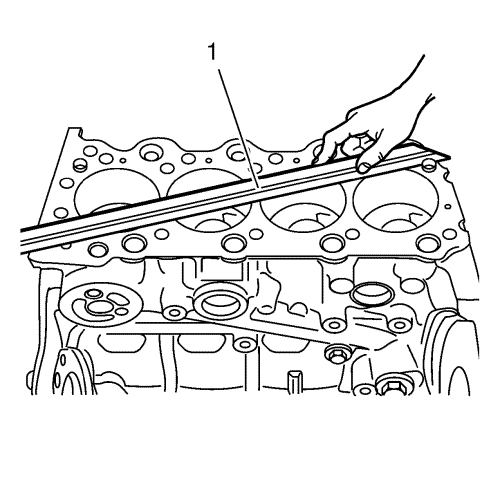
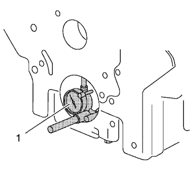
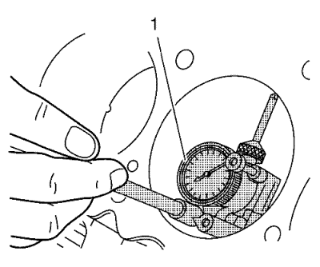

Limpieza e inspección del bloque del motor.
Herramientas especiales
EN-8087 Micrómetro de diámetros de cilindro
Si desea informarse sobre una herramienta regional equivalente, consultar Herramientas especiales .
Procedimiento de limpieza
- Elimine cualquier resto antiguo de sellador de roscas, material de la junta o sellador.
- Limpie todas las zonas siguientes con disolvente:
- Limpie todos los orificios roscados y pasantes con disolvente.
Advertencia: Utilice gafas de seguridad cuando emplee aire comprimido para evitar lesiones en los ojos.
- Seque el bloque del motor con aire comprimido.
Examen visual
- Inspeccione la presencia de cojinetes dañados o que patinen en los muñones del cojinete de cigüeñal. Si los muñones del cojinete del cigüeñal no son reparables, si los muñones del cojinete del cigüeñal están dañados, debe sustituirse el conjunto del bloque del motor.
- Inspeccione eventuales daños en todas las superficies de sellado y de conexión, repare o sustituya el bloque del motor si es necesario.
- Inspecciones si hay daños o exceso de suciedad en todos los agujeros roscados o pasantes.
- Inspeccione si hay daños en los pernos, si están dañados, sustitúyalos únicamente con pernos NUEVOS.
- Inspeccione la presencia de grietas o daños en las paredes del cilindro. Los casquillos de los cilindros no se reparan por separado, si están dañados los cilindros debe sustituirse el conjunto de bloque de cilindros.
- Inspeccione la presencia de grietas en el bloque del motor. No repare las grietas. Si se encuentran grietas debe sustituirse el conjunto del bloque del motor.
Procedimiento de medición
Inspección de la planeidad del bloque del motor

- Compruebe si el bloque motor está deformado tal y como se indica Utilice un filo recto (1).

- Compruebe si el bloque motor está curvado tal y como se indica. Utilice un filo recto (1).
Orificio del cilindro y orificio del cojinete del cigüeñal
Nota: Se pueden usar tornillos viejos en el procedimiento de medición.
- Monte los tornillos de la placa de sujeción del sombrerete de cojinete del cigüeñal y apriételos.

- Compruebe los orificios de cojinete de bancada del cigüeñal. Utilice la galga de espesores EN-8087 (1) para medir la concentricidad y alineación de los orificios de cojinete. Consulte Especificaciones mecánicas del motor para ver los valores permitidos.
- Sustituya el bloque motor y la placa de sujeción del sombrerete de cojinete del cigüeñal si los orificios de cojinete del cigüeñal no están dentro de los valores especificados.

- Compruebe el diámetro de los cilindros usando el indicador EN-8087 (1). Compruebe los siguientes elementos:
- Consulte Especificaciones mecánicas del motor para ver los valores permitidos.
- Si los diámetros interiores de los cilindros no cumplen las especificaciones, sustituya el bloque del motor.
- Desmonte la placa de sujeción del sombrerete de cojinete del cigüeñal.
| © Copyright Chevrolet. All rights reserved |